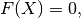
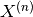
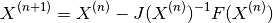
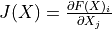
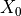
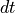
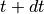

NMODL NONLINEAR solver¶
NONLINEAR blocks contain a set of non-linear simultaneous equations. They can be directly specified by the user in the MOD file, or more commonly can be constructed from KINETIC or DERIVATIVE blocks by the KineticBlock and SympySolver visitors.
These equations are rewritten in the form

where  is a vector containing the state variables involved in the equations, and this equation is then solved at runtime using Newton’s method
is a vector containing the state variables involved in the equations, and this equation is then solved at runtime using Newton’s method
This is an iterative method: given an approximate solution , a better approximation is given by

where  is the Jacobian of .
Newton solver¶
and are constructed by the solve_non_lin_system python routine which uses SymPy to analytically differentiate to find the exact Jacobian at compile time. The initial approximate solution  is chosen to simply be the current values of the state variables: as long as  is not too large the solution at  should not lie too far away.
The iterative Newton solver is called newton_solver and is implemented in src/solver/newton using the Eigen header-only matrix algebra library. Unit tests are available in test/newton/newton.cpp with the tags “[analytic][solver]”.
Fall-back solver¶
A fall-back solution if the analytic Jacobian is not available (for example if the equations use some custom neuron function calls that SymPy doesn’t know how to differentiate, or if VERBATIM blocks are used within the NONLINEAR block) is to use the newton_numerical_diff_solver variant of this solver that uses a finite difference approximation to estimate the Jacobian numerically.
This solver is also implemented in src/solver/newton, with Unit tests in test/newton/newton.cpp with the tags “[numerical][solver]”.
NB: this solver is implemented, but the visitor to set up the solve is not yet implemented
[ ]: